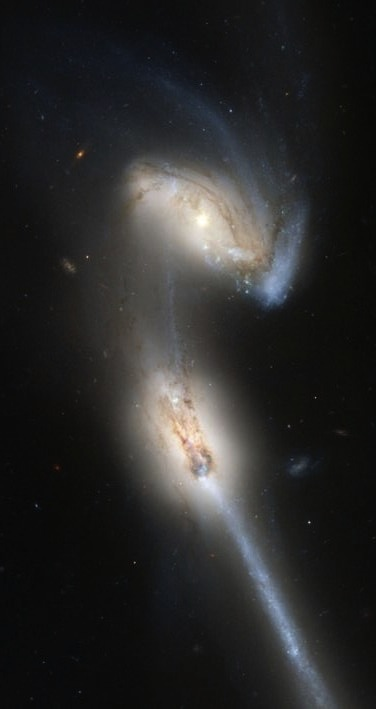

Under Construction
This page is under construction. Some day (hopefully soon) it will be Brian's personal webpage.
About Me
I was born and raised in Santa Barbara, CA, where I spent my formative years enjoying the ocean, the mountains, and the perpetually perfect weather.
After graduating from Dos Pueblos High School, I proceeded to major in Physics at U.C. Berkeley, where I was introduced to the wonders of astrophysics, and to my beautiful wife, Shabnam Javdani.
Next, we moved to Urbana, IL, where I earned my Ph.D. in physics at UIUC, working with Stuart Shapiro on fully relativistic computer simulations accreting, merging binary black holes.
I am currently a theoretical astrophysicist, working as a postdoctoral researcher with Zoltan Haiman in the astronomy department at Columbia University and Andrew MacFadyen at the Center for Cosmology and Particle Physics at New York University. My research focuses on electromagnetic signatures of accreting supermassive binary black holes.
I can best be contacted at any of the following email addresses:
Research

- It is currently believed that most, if not all galaxies have extremely massive (between a million and a billion times the mass of the sun) black holes at their centers.
- Galaxies are also known to merge with each other, combining to form a new galaxy which contains two very massive black holes.
- Once these black holes get close enough to begin orbiting one another, we refer to this as a supermassive binary black hole system.
- These binaries are so massive that they can create ripples in spacetime called "gravitational waves" which can travel all the way to earth and (hopefully) be measured.
- Gas that is nearby the binary will form a disk. This disk can become very hot and bright, and we can hope to observe them with our telescopes
- In my research, I use supercomputers to perform simulations of these systems in order to make predictions about observational signatures we can exploit to help us discover them.
CV
You can find a pdf of my CV here.
Web Apps
As a hobby, I have been teaching myself how to write Python web apps using the Flask web framework, and Twitter Bootstrap, and deploying them on Heroku. Here are a couple of examples:
FLOG: brian Farris's LOGging app.
A nice app for keeping lists, journals, and logging activities. It uses
Google+ Sign-in for authentication. Eventually, I would like to add analysis to monitor progress, etc. For now the only thing it does is make goofy word clouds from text entries.
FEATHER: brian Farris's wEATHER app.
A very simple weather app that automatically figures out where you are and gives you the current conditions and the hourly conditions for the next week. It uses the
Weather Underground API.